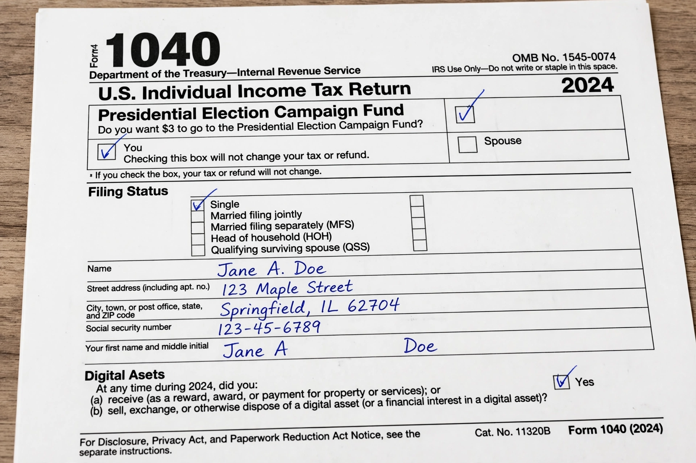

Public funding of elections refers to systems in which government provides money to political candidates or parties to finance their campaigns, wholly or in part, rather than relying exclusively on private donations. It is used in many democracies, typically in combination with disclosure rules and limits on private contributions and spending.
Common mechanisms include direct subsidies to parties (often proportional to votes or seats won), matching funds that multiply small private donations, free broadcast time and postage, and "clean elections" systems that give qualifying candidates a fixed public grant in exchange for refusing most private money. In the United States, the presidential public financing system, created after Watergate by 1974 amendments to the Federal Election Campaign Act and funded by a tax-return checkoff, provides matching funds in primaries and a general-election grant; major-party nominees have largely declined it since 2008 because its spending limits fell behind private fundraising. Several US states and cities, including Arizona, Maine, and New York City, operate their own programmes.
Supporters argue public funding reduces candidates' dependence on large donors and organisations such as political action committees, levels the playing field for challengers, and curbs corruption or its appearance. Critics object to using taxpayer money for political speech, argue that formulas entrench established parties, and contend that determined private and independent spending finds other channels. In the US, mandatory public financing has faced constitutional constraints under the First Amendment, though voluntary systems were upheld in Buckley v. Valeo (1976).
See also: Campaign finance · Political funding · Clean elections